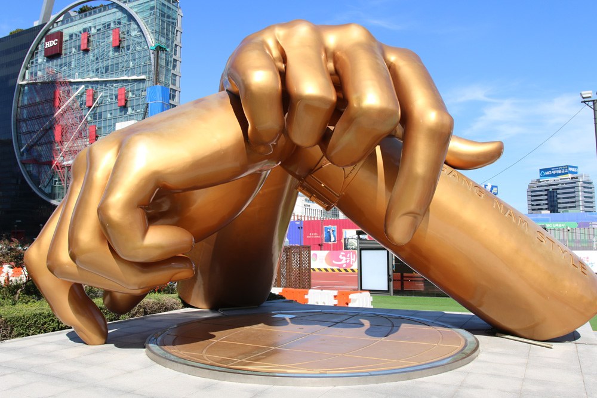
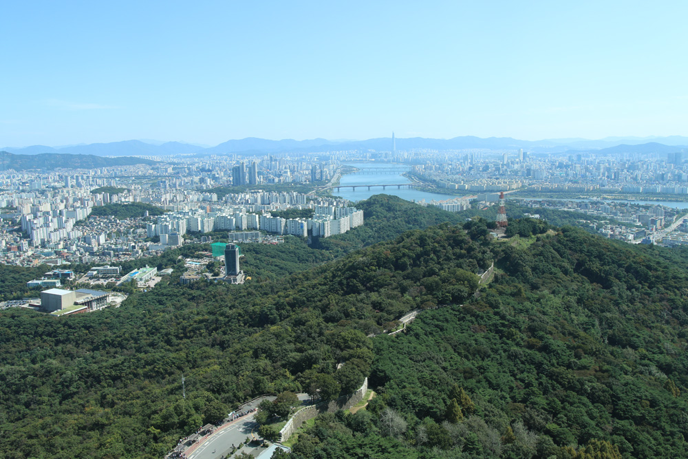
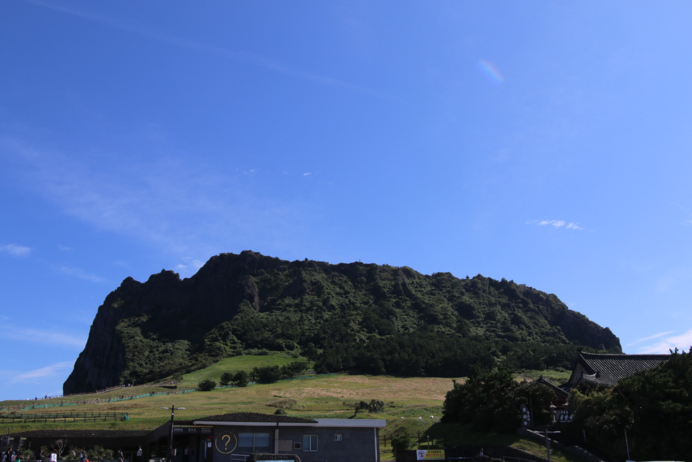

Most of you know that I have parted ways with my comfy home in Alexandria and decided to live out of a car for a year, essentially making me homeless. I never spent a lot of time outside the (north) east coast, and I wanted to go snowboarding in Denver without dealing with Hertz again (a pretty toxic company when dealing with a AWD shortage in a blizzard)!
I spent most of September (2023) decluttering my home and packing things into storage. Once October came around, though, I flew to Incheon, S. Korea first (my first vaca with the family in a long time).
The last time I went to Korea was in 2009 when the financial world was collapsing, but it didn't really impact me much any ways because I had no money! I studied aboard there for six months, making the most of my time there as a 21 year old. The goal of this trip is to experience Korea within the lens of my parents, eat everything good over there, and revisit some places I used to visit back when I was in college.
Note: Unfortunately, my phone died in the middle of the trip, so all my phone photos disappeared (lesson learned, never trust internal storage) and I was left to actually experience Korea for the remainder of the trip until I flew back and got a Pixel 8 at full price. I don't have enough feature photos to highlight some of the stuff, like conquering the peak of Ulsan-Bawi and Yonsei University.
I did, however, go to some sites I haven't been to before near Sokcho and in Jeju Island.
As well as made an effort to eat something different every meal.
I arrived back to DC, packed my car, and drove up to Philly for a week, Boston for another week, and then to New Hampshire, where I was going to test whether I could telework from a home with Spectrum internet near a ski resort away from a city (short answer; I was able to! I could even play video games with it).
I took this opportunity over three weeks to revisit some of the hiking trails I loved going to as a kid